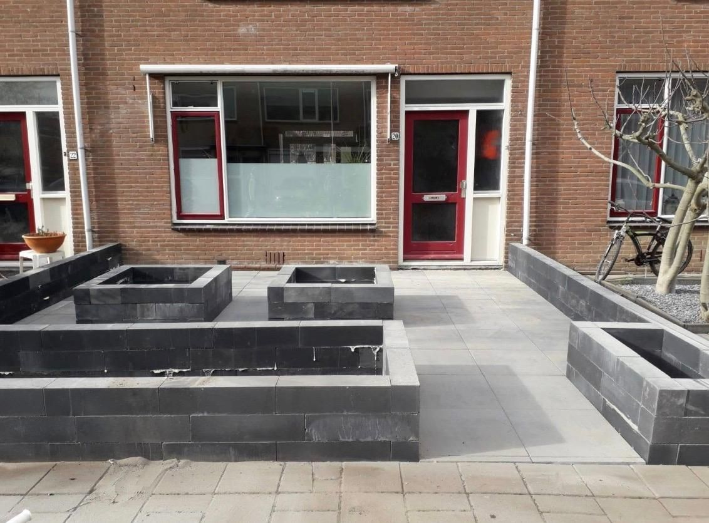

Malzemeler
Malzeme seçin ve karşılaştırın
Aradığınızı arayın, kullanıma ve bakıma göre filtreleyin ve en fazla üç seçeneği yan yana karşılaştırın.
Online sipariş henüz açık değil: teklif isteyin.
Her kalemde verilerin ne kadar kesin olduğunu görürsünüz. Fiyatlar yalnızca diğer tarafların kaynak ve tarihli açık piyasa referanslarıdır; Sealcleaning fiyatı değildir. Doğru ürün ve miktar konusunda danışmanlık veririz. Malzeme tek başına veya montajla teklife eklenebilir; fiyat ve teslimatı orada teyit ederiz.